One of the world's largest retailers negotiated supplier costs through a manual, inconsistent process. I led the UX strategy and design that turned a nearly unusable data platform into a tool buyers could actually read and adjust their leverage from, and it paid off before it even launched.
Buyers negotiated supplier costs through a manual, inconsistent process: weeks of preparation, binders of performance data, and a scatter of disconnected tools. A proof-of-concept built in Tableau was meant to help, but it had ballooned to more than thirty data tabs and was nearly unusable, taking several minutes to load each view, with complex visualizations that still needed interpretation.
The data existed, but what was missing was a way to turn it into leverage a buyer could actually see and act on, fast, in the room.
I mapped several additional digital tools being created to support the buying process by adjacent teams, and built a clean information architecture for easy accessibility of the new product within a growing toolset.
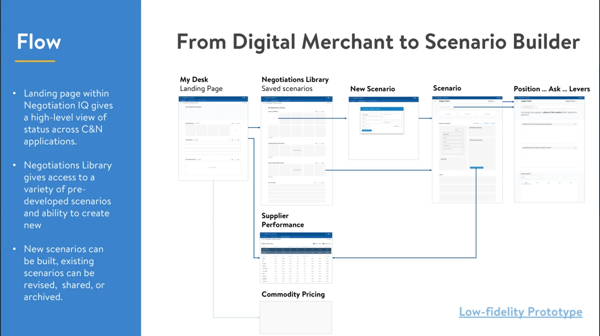
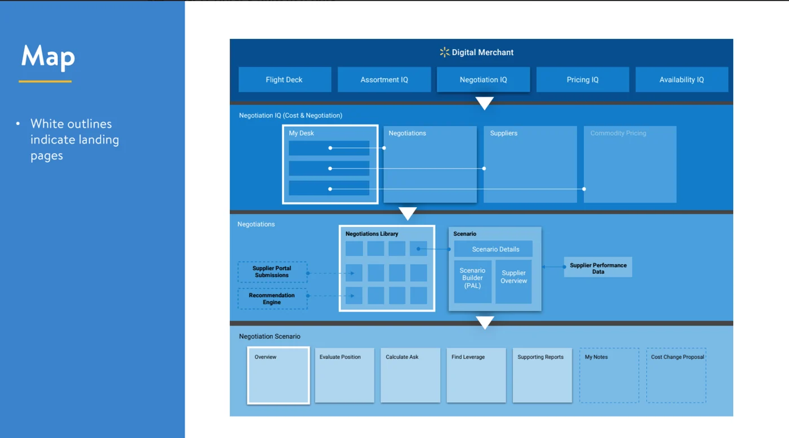
After completing a deep dive on the available data and gathering feedback from our strategy lead, I designed a prototype of the new tool. I ran usability sessions across buyer types to find what actually drove a negotiation, and separated the signal that mattered from the noise that didn't.
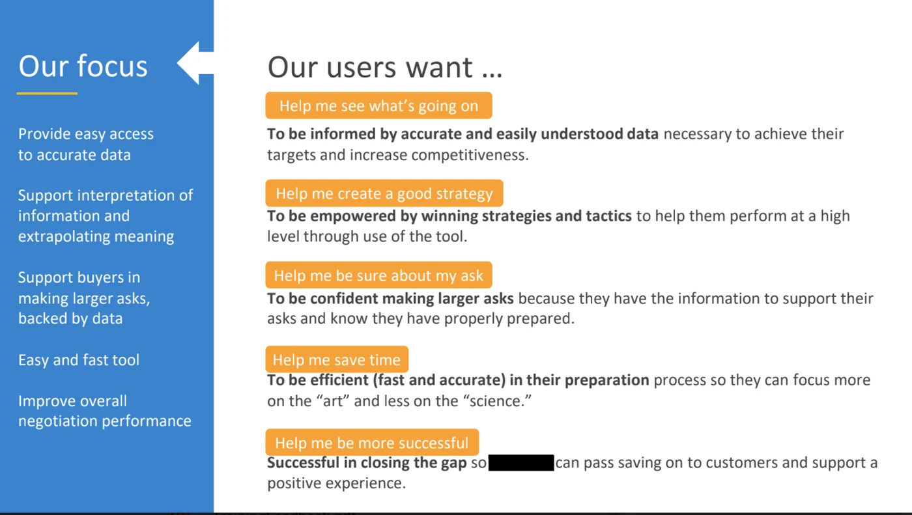
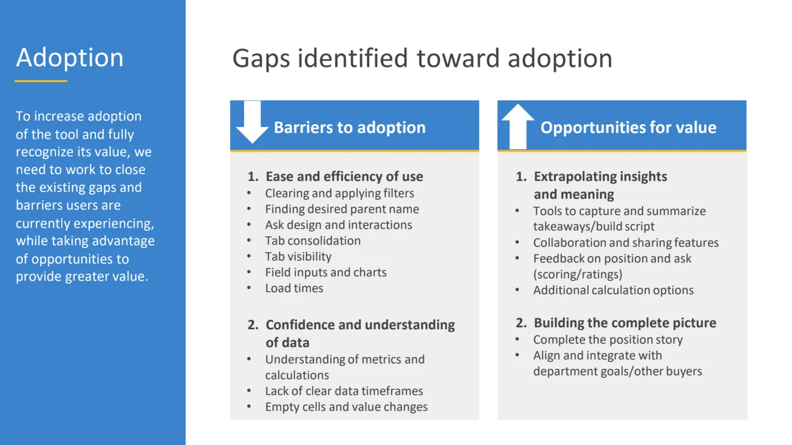
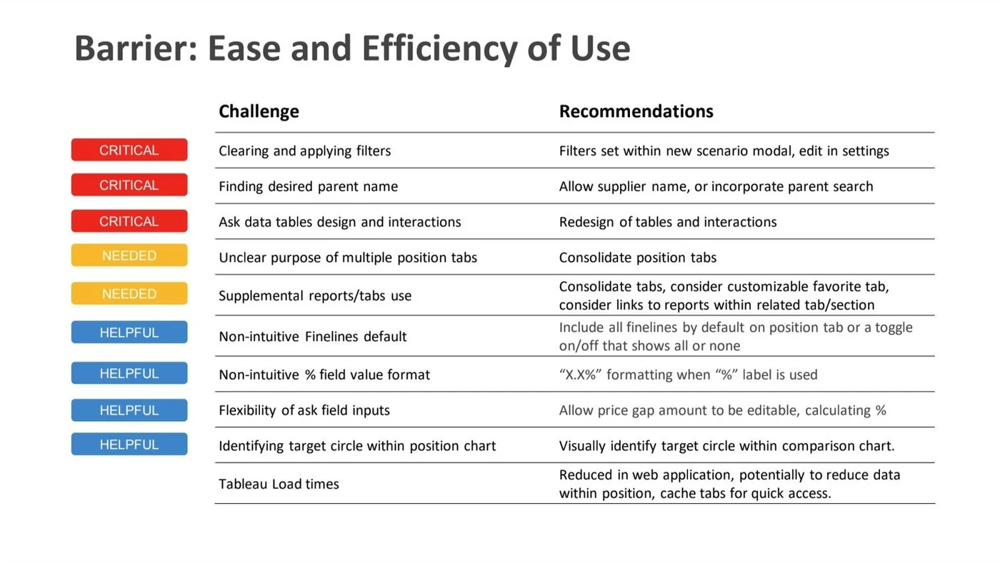
I designed a scannable interface that let a buyer read their position and leverage quickly, instead of hunting across tabs mid-negotiation. It gave a clear process for evaluating the relationship and making requests, with levers a buyer could pull to reach a deal that worked for both sides.
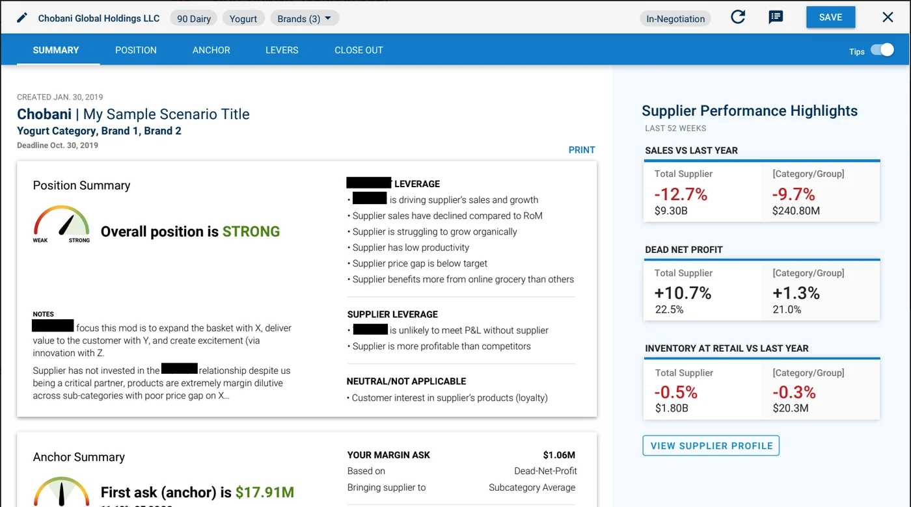
I co-facilitated a full-team story-mapping workshop, across three related products, to define the MVP and get development and strategy pointed at the same outcome, then ran a post-launch Kano study to shape the roadmap beyond the initial deployment.
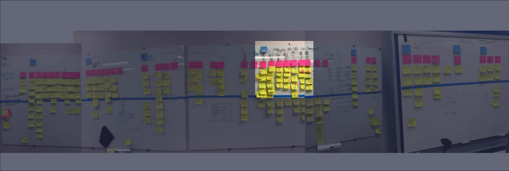
Before the official launch, a buyer used the tool in a trial negotiation and achieved $10M in savings, from a supplier they had previously failed to move. It replaced guesswork with a repeatable, data-grounded negotiation process the team could run again and again. Buyers reported a repeatable process grounded in strategy, new confidence going into critical negotiations, and stronger alignment across functional teams.
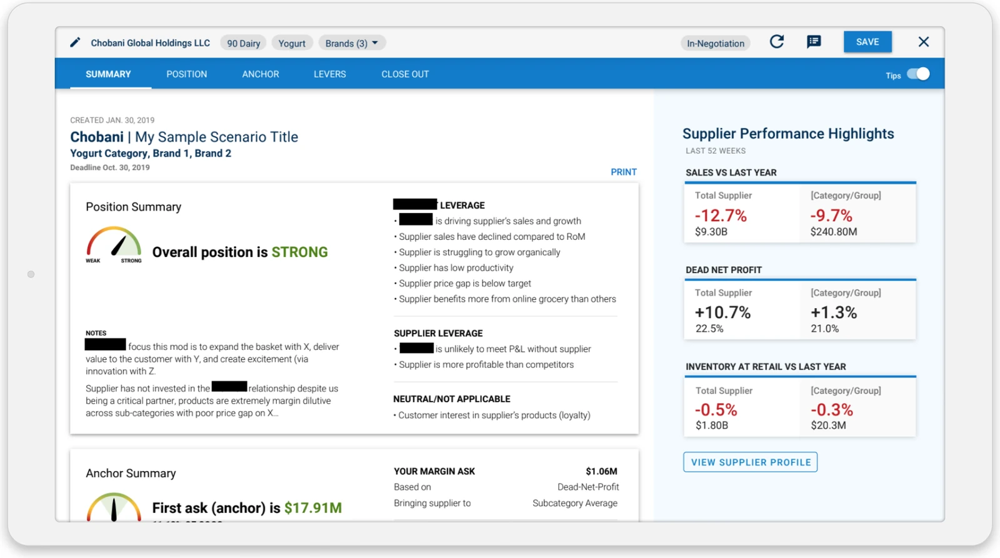
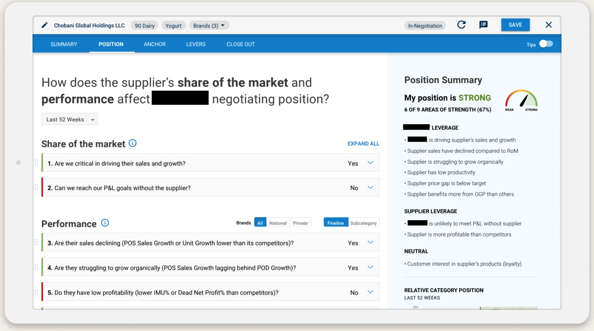
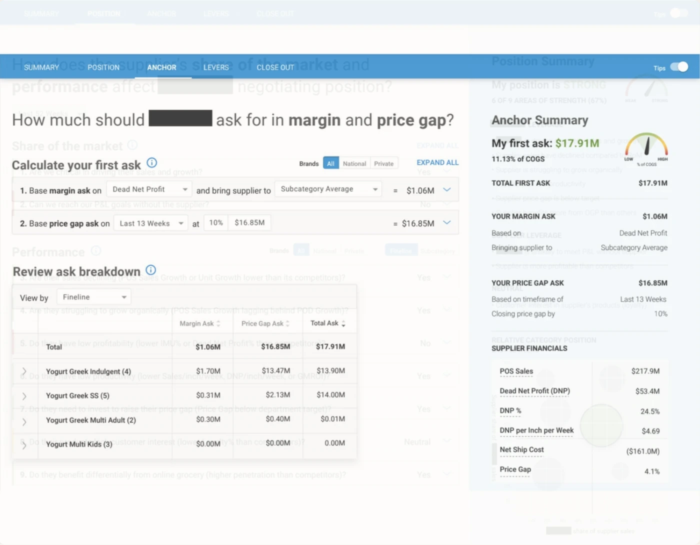
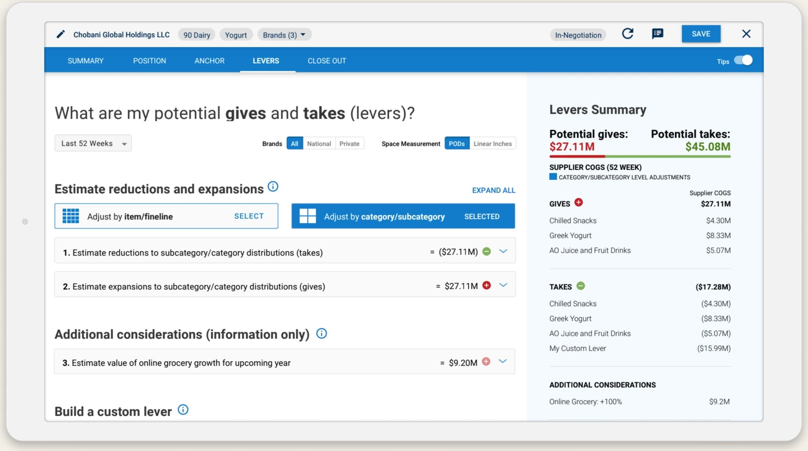
"On the negotiation side, we're coming up with new products that enable our team to prepare for negotiations faster and have the capabilities and the data they need. I just saw the latest prototype and I'm very excited about that; it's going to be a big deal for us."— CEO, one of the world's largest retailers
"A buyer just landed a $10M negotiation on a price-gap issue with a supplier. All of the savings will go to lowering price. Even with years of negotiation experience, he saved a ton of time with these capabilities."— Program note from the client team
"I created nine scenarios in less than an hour in preparation for a line review yesterday."— Buyer using the tool
"The results are in from our first NPS survey (40). You should be very proud. Your target users are giving you the thumbs up, great job hitting the mark."— Program lead
Whether you're building something complex, or just need clarity on where to start.